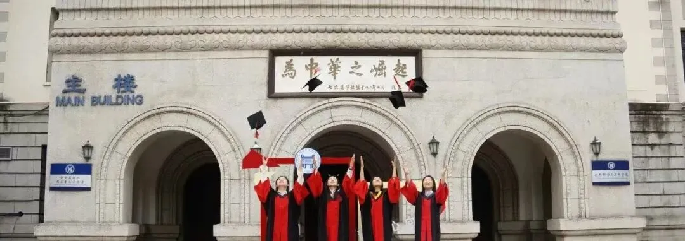

教职/博后招聘|北京科技大学
原文：https://mp.weixin.qq.com/s?__biz=MzAwMzIzOTk5OQ==&mid=2247532452&idx=2&sn=c861dc48da59233f0abc7522d32996ed&chksm=9b3c06f4ac4b8fe245e16f4b8a1abcbf61cadf9104fbbcf13a8f0b3f196afe063bd5d7bfeed7#rd 合集：求职/求学/招聘
01
写在前面
我们长期发布招聘/求职板块(甚至我给自己都发了求职：Biomamba求职| 国奖+4篇一作SCI)，欢迎各位老师/老板欢迎联系~我们也在招贤纳士Biomamba生信基地秋季招聘开启！其它需要求职的小伙伴也欢迎把简历发给我们[Biomamba_zhushou]，大家一起找工作/学习。用人单位也可以联系我们免费刊登招聘信息~
02
ABOUT US

** **
研究院简介 北京科技大学大兴研究院成立于2020年，是北京科技大学为加快国内一流、国际知名的高水平研究型大学建设步伐，搭建高端人才自主创新平台，响应国家生物医药创新人才建设需求，建设高端医药人才创新支持体系，而建立的新型研究型研究院。大兴研究院面向世界科技前沿和人民生命健康等国家重大战略需求，建设国际领先的生物医药研究平台，营造创新、开放的新环境。以高端人才引进培养，引领国际前沿医药科研方向，推进已有医药高端研究成果转化为工作重点，着力推进产学研结合。研究院秉持学术至上、产研结合的理念，最大限度发挥知名学者的领军作用、科研人员的创造力和主导作用，为大健康产业的技术提升和提高全民健康添砖加瓦。研究院近年来依托我校现有学科优势，进一步致力于拓展我校在干细胞、抗衰老研究领域的创新影响力。成立时间虽短，但已经在我国干细胞领域取得了一定成绩，近年来以北京科技大学为第一单位累计发表TOP学术论文16篇，承担多项国家级科研项目，多项科研成果已有效填补我校在生物医药领域研究的历史空白。同时研究院以北京科技大学其他强势学科为依托，将干细胞研究技术与新型材料、催化剂、传感器和信息学等领域跨学科协作，持续产生原创性重大创新成果，培育高端中青年人才。目标组建世界一流生物医药研究机构，汇聚世界一流水平专家学者，推进研究进一步向应用和实际需求转化。因科研需要，拟招聘科研为主的教师、博士后岗位若干名。
03
JOIN US
职位要求
- 道德品质良好，有良好的人际沟通能力，富有团队协作精神，身心健康。
- 具有国内外知名高校或科研院所授予的博士学位，教师岗位的应聘者无海外学习经历的需要在国内做过博士后研究，特别优秀者可酌情放宽；年龄一般不超过35周岁，应聘博士后岗位需博士毕业三年以内，特别优秀者可放宽年龄。
- 博士或工作期间从事生物制药、干细胞、高通量数据分析、生物材料等相关领域的研究工作。
- 近3年具有较高水平的代表性科研成果，包括但不限于高水平论文、国家级科研项目、新产品、新工艺、重大咨询报告、发明专利、标准、科技奖励等形式。
- 责任心强，工作踏实耐劳，能以全职身份在我校从事研究工作，能独立负责某一具体研究课题的有序进行，同时独立承担博士或硕士研究生的指导工作。
薪酬待遇
- 科研支持：为符合学校人才引进条件的人员提供科研平台和实验条件与经费。
- 研究生招生指标：可申请研究生导师资格，博士生指标单列。
- 晋升晋级：可申请研究员系列专业技术职务的评审；另可申报学校相关人才计划。
- 符合政策的，提供人才公寓/住房补贴。
- 符合政策的，解决子女入托入学。
- 符合政策的，解决本人、配偶及子女留京户口。
应聘材料
- 详细个人简历。
- 承担科研项目及取得学术成果证明材料。
请确认所填简历信息及附件材料真实、完整、准确，本次招聘资格审查贯穿全过程，如发现不如实填报个人信息，或不符合应聘条件、聘用条件的情况，取消其应聘及聘用资格，已入校工作的解除合同。

联系方式
 有意者请将个人简历发送至以下邮箱 yufeng_liu@ustb.edu.cn，并在邮件主题中注明“应聘北科大大兴研究院教师+姓名+单位”。后续程序将通过电话或电子邮件通知，请确保提供的联系方式畅通有效。
大兴研究院教学科研单位招聘工作管理人员联系方式办公地点：北京市海淀区学院路 30 号方兴大厦 710 室电子邮箱：yufeng_liu@ustb.edu.cn
有意者请将个人简历发送至以下邮箱 yufeng_liu@ustb.edu.cn，并在邮件主题中注明“应聘北科大大兴研究院教师+姓名+单位”。后续程序将通过电话或电子邮件通知，请确保提供的联系方式畅通有效。
大兴研究院教学科研单位招聘工作管理人员联系方式办公地点：北京市海淀区学院路 30 号方兴大厦 710 室电子邮箱：yufeng_liu@ustb.edu.cn